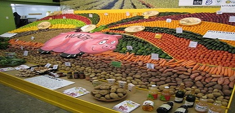

Healthy Vegetables and Herbs
There is no single most healthy vegetable, but eating a variety of vegetables can improve health and well-being. Nutritious options to add to the diet include spinach, peas, sweet potatoes, and tomatoes.
more text...There is no single most healthy vegetable, but eating a variety of vegetables can improve health and well-being. Nutritious options to add to the diet include spinach, peas, sweet potatoes, and tomatoes.
more text...